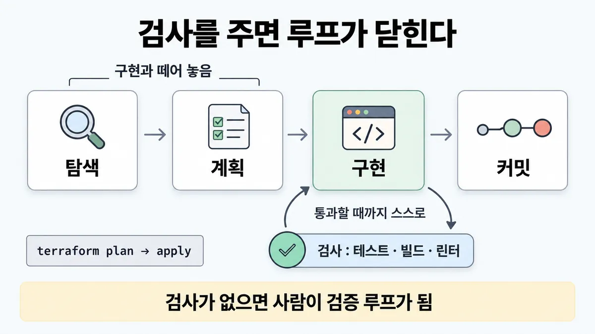
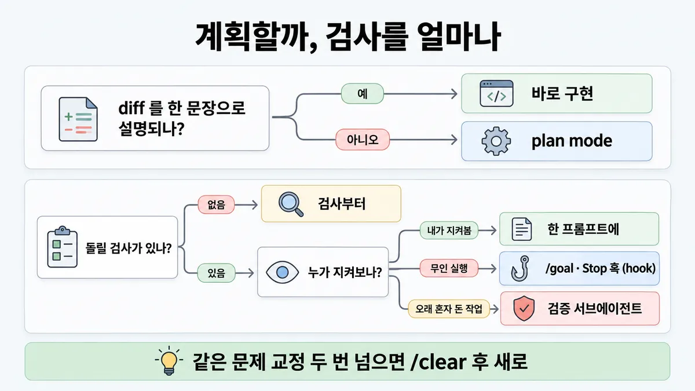

■ 코딩 맡기는 흐름
표시가 없는 문장은 공식 문서에서 확인한 내용이에요. 다른 표시는 읽는 법
왜 배우나 — 시험이 요구하는 것
시험 목표 7.2 개발 흐름 개선 · D7 개발팀 7%Improve developer workflows using AI-assisted tooling
이 개념으로 푸는 판단 (할 수 있어야 하는 것)
- 7.2① Claude 에게 코딩을 맡기는 흐름은? — 탐색 → 계획 → 구현 → 검증 루프를 어떻게 짜나
한눈에
Claude 에게 코딩을 맡길 땐 ⓐ 스스로 돌릴 합격/불합격 검사를 주고 ⓑ 탐색·계획을 구현과 떼어 놓음. 검사가 있으면 루프가 사람 없이 닫힘
근본 제약 = 컨텍스트 창. 찰수록 앞선 지시를 잊고 실수가 늘어남 → 교정·탐색이 쌓이면 새로 시작
비유 terraform plan → apply, 그리고 CI 테스트 게이트. "숙련자는 plan 없이 바로 apply" 가 속이는 습관


ELI5
숙제를 맡길 때 "다 했어?" 대신 정답지를 같이 주는 거예요.
- 정답지가 있으면 혼자 맞춰 보고 고쳐요.
- 정답지가 없으면 매번 어른이 봐 줘야 해요.
- 큰 숙제는 먼저 계획을 세우고, 한 줄짜리는 바로 해요.
- 같은 걸 두 번 넘게 틀리면 새 종이에 다시 시작해요.
개념 설명
원리
멈추는 신호
- Claude 는 일이 "끝나 보이면" 멈춤. 돌릴 검사가 없으면 그게 유일한 신호 → 사람이 검증 루프가 되고, 모든 실수가 사람이 알아챌 때까지 기다림.
- 합격/불합격을 돌려주는 검사(테스트 · 빌드 종료 코드 · 린터 · fixture diff · 스크린샷 비교)를 주면 "일 → 검사 → 결과 읽기 → 고치기" 가 사람 없이 돎.
- 검사를 거는 세기는 계단 : 한 프롬프트 →
/goal(별도 평가자가 매 턴 재확인) → Stop 훅(통과할 때까지 턴 종료 차단) → 검증 서브에이전트(일한 쪽이 채점하지 않게). 계단을 오를수록 설정 비용이 늘고, 대신 사람이 덜 지켜봐도 됨.
탐색과 실행 떼기
- 곧장 코딩하면 엉뚱한 문제를 풂 → plan mode 로 먼저 읽고 계획만. 계획 단계에선 변경 없음.
- 대신 오버헤드. 그래서 기준이 "diff 를 한 문장으로 말할 수 있나". 말할 수 있으면 범위를 이미 안다는 뜻 → 바로.
컨텍스트가 근본 제약
- 대화·읽은 파일·명령 출력이 전부 창에 쌓이고, 찰수록 앞선 지시를 잊고 실수가 늚.
- 그래서 ⓐ 조사는 서브에이전트(요약만 돌아옴) ⓑ 관련 없는 작업 사이
/clearⓒ 같은 문제 교정이 두 번을 넘으면 실패한 시도가 컨텍스트를 더럽힌 것 → 새로 시작이 대개 이김.
핵심 질문 두 개
- Claude 가 "됐다" 를 스스로 확인할 수단이 있나?
- 이 변경을 한 문장으로 말할 수 있나?
규칙과 판단


갈림길
③④ 계획할까 [7.2①]
바로 구현
범위 분명·작은 수정은 바로. plan mode 는 오버헤드
plan mode
탐색 → 계획 → 구현 → 커밋. 계획 단계는 읽고 답만, 변경 없음 · plan mode 는 쓰기를 막는 것. 컨텍스트 보호는 서브에이전트
①② 검사를 얼마나 세게 [7.2①]
검사부터
테스트 · 빌드 종료 코드 · 린터 · fixture diff 스크립트 · 스크린샷 비교
/goal·Stop 훅 쪽한 프롬프트에
검사를 돌려 보며 고치라고 같은 메시지에 요청
/goal · Stop 훅
통과할 때까지 턴 종료를 막음
검증 서브에이전트
결과를 따져 봄 — 일한 에이전트가 채점하지 않게
⑥ 막혔을 때 [7.2①]
새로 시작
/clear 후 배운 걸 넣은 더 구체적 프롬프트
바로 교정
Esc 로 멈추고 방향 틀기 · 되돌리기는 /rewind
흐름
그림 속 이름·금액·시간·토큰 수는 예시예요. 공식 한도·동작은 카드 본문 값이 기준.
장면 글로 보기
칸 : 사람 → Claude → 검사
규칙 (검사) : 테스트 · 빌드 종료 코드 · 린터
질문 : "다 됐다" 는 누가 판정할까?
① 검사를 줌 → 루프가 닫힘 ✓
- 시작 : 사람 — 말 : “결제 모듈 리팩터링해 줘.
npm test통과까지.” - 맡기기 : 사람 → Claude : 검사 기준까지 같이 — 쪽지 : 할 일: 리팩터링 / 완료:
npm test통과 - 실행 : Claude → 검사 : 테스트를 돌림 — 쪽지 : $ npm test / 2 failed · 48 passed
- 읽기 : 검사 → Claude : 실패를 읽고 고침 — 쪽지 : FAIL
refund.test.ts/ → 고치고 다시 - 통과 : Claude → 검사 : 다시 돌림 — 쪽지 : $ npm test / 50 passed · exit 0
- 끝 : 검사가 통과할 때까지 스스로 반복 — 사람이 검증 루프가 되지 않음
② 검사 없음 → 사람이 검증 루프 ≠
- 시작 : 사람 — 말 : “대시보드 좀 좋게 해 줘.”
- 맡기기 : 사람 → Claude : 완료 기준 없음 — 쪽지 : 할 일: 대시보드 개선 / 완료: ?
- 건너뜀 : 검사
- 멈춤 : Claude : "끝나 보임" 이 유일한 신호 — 말 : “다 된 것 같아요.”
- 넘기기 : Claude → 사람 : 실수는 사람이 알아챌 때까지 남음 — 쪽지 : PR #214 / 검사 결과: 없음
- 끝 : 사람이 검증 루프가 됨 — 모든 실수가 사람이 알아챌 때까지 기다림
③ 같은 문제 교정 반복 ≠
- 시작 : 사람 — 말 : “날짜 형식 또 틀렸어.”
- 교정 : 사람 → Claude : 같은 문제 세 번째 — 쪽지 : 교정 1: 날짜 형식 / 교정 2: 날짜 형식 / 교정 3: 날짜 형식
- 쌓임 : Claude : 컨텍스트가 실패한 시도로 어지러움 — 쪽지 : 시도 A 실패 / 시도 B 실패 / 교정 ×3 …
- 끝 : 두 번 넘게 교정했으면
/clear후 배운 걸 넣은 더 구체적 프롬프트로
나머지 규칙
-
맡기는 말 : 파일·시나리오·테스트 선호를 지정 · 답이 있는 소스를 지목 · 기존 패턴을 가리킴 · 증상 + 위치 + "고쳐진 모습". 큰 기능은 Claude 가 먼저 인터뷰(
AskUserQuestion) →SPEC.md→ 새 세션에서 실행. 좋은 스펙 = 관련 파일·인터페이스 이름 · 범위 밖 · 끝단 검증 단계 -
끝났다고 치기 전 새 컨텍스트 리뷰 → ■ AI 코드 리뷰. 반복 작업을 무인으로 올리는 곳 → ■ 자동화 surface 고르기
규칙 원문 ①②③④⑥ (갈림길로 그린 규칙)
-
검사를 준다 : Claude 는 일이 끝나 보이면 멈춤. 돌릴 검사가 없으면 "끝나 보임" 이 유일한 신호 → 사람이 검증 루프가 되고 모든 실수가 사람을 기다림. 검사 = 테스트 · 빌드 종료 코드 · 린터 · fixture 와 출력 diff 하는 스크립트 · 스크린샷 비교. 성공을 주장하지 말고 증거(테스트 출력 · 실행한 명령과 결과 · 스크린샷)를 보이게 함 [7.2①]
-
검사를 얼마나 세게 거나 (설정 비용 ↔ 사람이 지켜보는 수고)
방식 어떻게 언제 한 프롬프트 검사를 돌려 보며 고치라고 같은 메시지에 요청 어떤 작업에나 오늘 바로 세션 전체 /goal조건 — 별도 평가자가 매 턴 재확인무인 실행 결정적 게이트 Stop 훅이 검사를 스크립트로 돌려 통과할 때까지 턴 종료를 막음 무인 실행 다른 검토자 의견 검증 서브에이전트·동적 workflow 가 결과를 반박 — 일한 에이전트가 채점하지 않게 오래 혼자 돈 작업 무인 실행이 사람 없이 제대로 끝나게 하는 건
/goal·Stop 훅 쪽 (2026-09-28 조회) -
4단계 = 탐색 → 계획 → 구현 → 커밋. plan mode 로 탐색과 실행을 떼어 놓음 → 곧장 코딩하면 엉뚱한 문제를 풂. plan mode =
Shift+Tab(상태 표시줄⏸ plan mode on) 또는claude --permission-mode plan, 파일을 읽고 답만 하고 변경 없음.Ctrl+G로 계획을 편집기에서 고침 (2026-09-28 조회) [7.2①] -
계획을 건너뛸 때 : 범위 분명·작은 수정(오타 · 로그 한 줄 · 변수 이름)은 바로. 계획이 쓸 만한 건 접근법 불확실 · 여러 파일 · 낯선 코드. diff 를 한 문장으로 설명할 수 있으면 계획 건너뜀
-
교정 : 빗나가면 바로 교정 —
Esc로 멈추고 방향 틀기(컨텍스트 유지) · 되돌리기는/rewind. 같은 문제를 한 세션에서 두 번 넘게 교정했으면 컨텍스트가 실패한 시도으로 어지러움 →/clear후 배운 걸 넣은 더 구체적 프롬프트. 관련 없는 작업 사이/clear. 조사는 서브에이전트로 — 별도 컨텍스트에서 읽고 요약만 돌려줌(메인 컨텍스트 보호)
더 깊이 : 판단 규칙 · 상황 변수 (설명)
판단 규칙
| 조건 | 답 | 근거 |
|---|---|---|
| 돌릴 검사 없이 맡김 | 검사부터 줌(테스트·빌드·린터·스크린샷) | best-practices "Give Claude something that produces a pass or fail, and the loop closes on its own." |
| 무인으로 끝까지 돌아야 함 | /goal 조건 또는 Stop 훅 | best-practices "The /goal and Stop hook versions are what let an unattended run finish correctly without you." |
| 일한 에이전트의 자기 판정이 못 미더움 | 검증 서브에이전트가 반박 | best-practices "so the agent doing the work isn’t the one grading it" |
| 접근법 불확실 · 여러 파일 · 낯선 코드 | plan mode (탐색 → 계획 → 구현 → 커밋) | best-practices |
| diff 를 한 문장으로 말할 수 있음 | 계획 건너뛰고 바로 | best-practices "If you could describe the diff in one sentence, skip the plan." |
| 같은 문제를 두 번 넘게 교정 | /clear 후 배운 걸 넣은 더 구체적 프롬프트 | best-practices |
| 조사가 수백 파일로 번짐 | 조사 범위를 좁히거나 서브에이전트로 | best-practices |
| 큰 기능, 요구가 흐림 | Claude 가 인터뷰 → 스펙 → 새 세션에서 구현 | best-practices |
| 성공 보고를 받음 | 주장 말고 증거(테스트 출력·명령 결과) | best-practices "Have Claude show evidence rather than asserting success" |
상황 변수
| 변수 | 값 | 답 쪽 | 근거 |
|---|---|---|---|
| 지켜보는 사람 | 옆에서 봄 | 한 프롬프트 안 검사로 충분 | best-practices |
| 지켜보는 사람 | 없음(밤새 · CI) | /goal · Stop 훅 · 검증 서브에이전트 | best-practices · Skilljar cci 486938 |
| 변경 크기 | 오타 · 로그 한 줄 · 이름 바꾸기 | 바로 구현 | best-practices |
| 변경 크기 | 여러 파일 · 아키텍처 선택 | plan mode | best-practices |
| 작업 성격 | 탐색적(무엇이 나올지 보고 싶음) | 계획 없이 · 막연한 프롬프트도 됨 | best-practices |
| 세션 기록 | 한 문제를 깊게 파는 중, 기록이 값짐 | 컨텍스트를 쌓아 둬도 됨 | best-practices |
| 세션 기록 | 실패한 시도가 쌓임 | /clear 후 새로 | best-practices |
| UI 변경 | 검사가 코드로 안 됨 | 스크린샷 비교를 검사로 | best-practices |
연습 문제
결제 모듈 리팩터링을 밤새 사람 없이무인 Claude 에게 맡긴다. 저장소엔 npm test 로 도는 테스트가 이미 있다검사 있음. 팀원은 "아침에 사람이 결과를 눈으로 확인하면 된다" 고 한다. 작업이 사람 없이 제대로 끝나게 하려면?
시험 대비
함정
- "사람이 매번 결과를 눈으로 확인" → 사람이 검증 루프가 됨. 검사를 줌
- "모든 작업을 plan mode 로" → 작은 수정엔 오버헤드. diff 한 문장이면 건너뜀
- "대시보드 좀 좋게" 한 줄 → 스크린샷을 붙이고 결과 스크린샷과 비교·차이 나열 후 고치게
- "빌드 실패 → 오류를 억눌러 통과" → 근본 원인을 고치고 빌드 성공까지 확인
- "같은 세션에서 계속 교정" → 두 번 넘으면
/clear후 새로 - "Claude 요약이 '완료'라서 완료" → 증거(테스트 출력·명령 결과)를 봄
- "탐색으로 컨텍스트가 차니 plan mode" → plan mode 는 쓰기를 막는 것. 컨텍스트 보호는 서브에이전트
- 반대 함정 : "계획은 늘 건너뛴다 · 막연한 프롬프트는 늘 오답" → 탐색적 작업은 계획 없이 · 막연한 질문이 맞을 때도 있음
신호
"Give Claude something that produces a pass or fail, and the loop closes on its own."
"Without a check it can run, “looks done” is the only signal available, and you become the verification loop"
"Separate research and planning from implementation to avoid solving the wrong problem."
"If you could describe the diff in one sentence, skip the plan."
"If you’ve corrected Claude more than twice on the same issue in one session, the context is cluttered with failed approaches."
"Have Claude show evidence rather than asserting success"
더 깊이 : 뒤집히는 때 · 오답 재료 (설명)
뒤집히는 때
1. 계획은 늘 좋은 것? — 작은 수정이면 뒤집힘
- 조건 : 변경이 파일 1개 · 한 문장으로 설명됨(예 "결제 재시도 횟수 상수를 3에서 5로").
- 판단 : plan mode 는 오버헤드. 이 조건이면 바로 구현이 공식 답. 지문이 "모든 변경에 계획을 강제" 하는 팀 규칙을 제안하면 오답 쪽.
- 등급 : (best-practices)
2. 한 문장인데 코드가 낯설 때
- 조건 : "로그인 토큰 갱신을 고친다" 처럼 한 문장이지만, 건드릴 코드를 처음 봄.
- 판단 : 공식의 계획 기준 셋 중 "낯선 코드" 에 걸림. 한 문장 기준은 diff 를 말할 수 있냐이지 목표 를 말할 수 있냐가 아님 — 어느 파일 무엇을 바꿀지 모르면 diff 를 한 문장으로 못 말함 → 계획(최소한 탐색) 쪽.
- 등급 : 업계 일반 (공식 두 문장 "unfamiliar with the code" · "describe the diff in one sentence" 을 이어 읽은 해석 — 둘을 함께 다룬 공식 문장은 없음)
- 근거 : best-practices
3. "두 번 넘게 교정하면 새로" 가 안 맞을 때
- 조건 : 교정이 여러 번이지만 매번 다른 문제이고, 한 복잡한 문제를 깊게 파는 중.
- 판단 : 공식 규칙은 "같은 문제" 를 두 번 넘게. 기록이 값진 깊은 작업이면 컨텍스트를 쌓아 두라는 공식 문장도 있음 → 교정 횟수만 세서
/clear하는 보기는 약함. - 등급 : (best-practices)
4. 검사는 줬는데 무인 실행이 중간에 "끝났다" 고 멈출 때
- 조건 : 프롬프트에 "테스트 돌리고 고쳐" 를 넣고 밤새 돌림. 아침에 보니 절반쯤에서 끝났다고 보고.
- 판단 : 한 프롬프트 방식은 Claude 가 스스로 멈출 수 있음. 무인은
/goal(매 턴 별도 평가) 또는 Stop 훅(통과 전 턴 종료 차단)으로 올림. - 등급 : (best-practices). Stop 훅의 연속 차단 상한 수치는 미열람 → 미해결 2.
오답 재료
| 오답 | 왜 끌리나 | 왜 틀리나 | 근거 |
|---|---|---|---|
| "사람이 매번 결과를 눈으로 확인한다" | 사람 검토가 가장 안전해 보임 | 사람이 검증 루프가 되고 실수가 전부 사람을 기다림. 검사를 줌 | best-practices |
| "모든 작업을 plan mode 로" | 계획은 늘 좋아 보임 | 오버헤드. diff 한 문장이면 건너뜀 | best-practices |
| "더 길고 정중한 지시로 다시 씀" | 설명이 모자라서 틀린 것 같음 | 필요한 건 파일·시나리오·"고쳐진 모습" 과 돌릴 검사. 교정이 쌓였으면 새로 | best-practices |
| "빌드가 깨지면 오류를 억눌러 통과시킴" | 초록불이 빨리 뜸 | 근본 원인을 고치고 빌드 성공까지 확인 | best-practices "address the root cause, don’t suppress the error" |
| "탐색으로 컨텍스트가 차니 plan mode 로" | plan mode = 신중 모드로 보임 | plan mode 는 변경을 막는 것. 컨텍스트 보호는 서브에이전트 | best-practices |
| "Claude 가 '완료' 라고 요약했으니 머지" | 요약이 깔끔함 | 주장이 아니라 증거. 무인 실행이면 diff 부터 봄 | best-practices · Skilljar cci 486938 |
| "같은 세션에 교정을 계속 쌓음" | 맥락이 이어져 유리해 보임 | 실패한 시도가 컨텍스트를 더럽힘. 두 번 넘으면 /clear | best-practices |
| "막연한 프롬프트는 늘 오답" (반대 함정) | 구체적 지시가 정답이라 외움 | 탐색 중엔 막연한 질문이 모르는 걸 끌어냄 | best-practices |
참고
CCA-F
봄 (3.4 계획 모드 vs 직접 실행 — diff 한 문장이면 직접 · 3.5 반복 개선 — 예시·검사로 루프 닫기, 두 번 넘게 교정하면 /clear) — 여기선 팀이 일을 맡기는 흐름으로 묻나 : 검사를 어디에 얼마나 세게 거나(프롬프트 · /goal · Stop 훅 · 검증 서브에이전트), 무인 실행을 무엇으로 끝내나
개념
출처
- 가이드 목표 7.2 공식 시험 가이드 v1.0
- best-practices (2026-09-28 조회)
- common-workflows
- Skilljar cci 486938 (무인 실행 검증)
상태
- 모든 줄을 공식 문서에서 확인
미해결
- 목록 영상 근거(Part 16 [08:55] "스킬·서브에이전트로 한정 작업 위임")는 유튜브 원문을 열지 않아 대조 안 함 — 카드는 공식 원문만 씀.
- Stop 훅의 연속 차단 상한 ·
/goal이 멈추는 조건 수치는 hooks·goal 문서를 안 열어 카드에 안 넣음 (best-practices이 링크만 줌). - 권한 기본값 문장("v2.1.283 이상은 auto mode 가 기본", best-practices)은 버전 조건 — 시험 시점(v1.0 가이드) 값과 다를 수 있어 카드에 안 넣음. Claude Code 버전별 날짜는 조회 안 함.